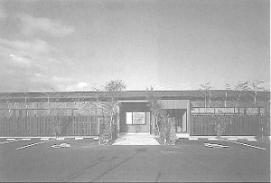
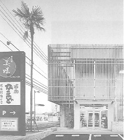
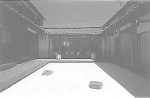

後藤 哲夫（ごとう てつお）
高松高校 和63年卒
(Last updated:2014.2)
プロフィール

わしょく家・二蝶
1988年(昭和63年)高松高校卒業
1995年芝浦工業大学修士課程修了
隈研吾建築都市設計事務所を経て、1997年に独立。
2004年 高松にて後藤哲夫建築事務所を設立
後藤哲夫建築事務所のサイトはこちら
代表作に
『AsianGateHouse(沖縄)(1999)、
『わしょく家二蝶(香川)』(2002)､
『うむやすみゃあす･ん診療所(沖縄)』(2006)、
『名物かまど坂出駅南口店』(2006)など。
受賞
「うむやすみゃあす・ん診療所」で、医療福祉建築賞2008を受賞。
「西川クリニック」で、第3回香川県福祉のまちづくり賞を受賞。
地方の役割 『アート』と『建築』を通じて
（第30回東京玉翠会プログラムのインタビュー記事より）高松高校１年のときに生物の進化を鳥の子用紙に書き写すという宿題があり、その図が几帳面で精密であったことから、生物の谷本先生に「後藤君みたいな人が建築家になったら良いと思うよ」と言われました。
これが私が建築家を目指すようになったきっかけです。
大学は建築学科に進み、卒業設計で学校代表になり全国大会に出ました。
その時の私の作品はかなりストイックなものであったためか、審査委員長の評価は酷評だったのですが、審査員の一人宮本亜門氏は「この作品はおもしろい」と言ってくださり、結果としては銀賞を獲得することができました。

名物かまど坂出駅南口店 卒業後は、東京の隈研吾設計事務所で活動していました。
ところが、数年後、宮本亜門氏から沖縄に建てる自宅の設計を依頼され、これがきっかけとなり独立することとなりました。
宮本亜門氏邸の設計にあたっては、昼間、隈事務所で他の仕事をしつつ、帰宅後に自宅で設計をしていました。ところが、ある日の打合せで、亜門さんに「これは東京の人から見た沖縄のデザインで、僕はリゾート開発で作ったような家には住みたくない。沖縄の風土をよく理解してそこに根ざしたような家に住みたい｡」と言われました。
そこで、このままではいい作品ができないと感じ、思い切って隈事務所をやめ、現地の空気を感じるため沖縄に移り住み、一から設計をやり直すこととしました。
宮本亜門さんとの親交や沖縄で設計活動している時､数多くの建築家がいる中で、お客さんはなぜ特定の建築家に頼もうと思うのだろう？と考えるようになりました。
そこで行き着いたのが、もし、その人らしさがあればお客さんも頼みやすいのではないか、ということでした。
では他の建築家と違う、自分らしさとは何かと考えた時、生まれた環境にそのヒントがあるのではないかと思い、いろいろ悩みましたが、白分らしさを探そうと高松に帰ってきたわけです。
2000年に高松に戻って、個人住宅を中心に医療施設や店舗を含め、独立してから86件ほど手掛けました。
その中には、高松市に唯一残っている料亭の『二蝶』が、料亭のおもてなしをカジュアルに味わってもらおうという思いで作った『わしょく家・二蝶』、高松高校出身の方が経営されている『名物かまど』、また､最近オープンした東京スカイツリーの中に『うどん本陣山田家』が出店しましたが、その内装も担当させて頂きました。

不在の存在 もともと僕が高松に戻ってきた目的は地元に根ざした建物を作りたいということでしたので、地元に根ざした企業のお仕事をさせていただくことができて大変嬉しく思っています。
以前勤めていた事務所のボスである隈研吾氏に、生まれ故郷の「高松」で独立することを報告に行った際、「都会の建築家が一番怖いのは、地方で毎年一件でもいいからコツコツ作り続けている建築家です。東京にいて例えば３年に１度、大きな建物を建てている建築家よりも、地方で毎年一件でも作り続けることの方が難しいし、その積み重ねがあれば多少大きな風が吹いても根がしっかりしていて倒れることはない｡］と言われました。
このことを僕は今でも大切に実行しており、毎年どんなに小さな物件でも最低一件は作るようにしています。
これからもより魅力的な香川を創るべく、まちづくりを中心に活動していきたいと思います。